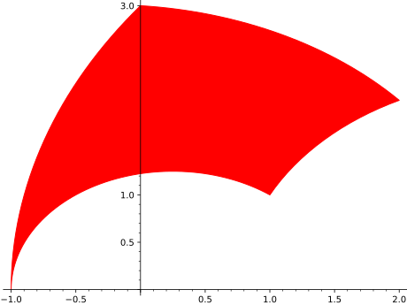
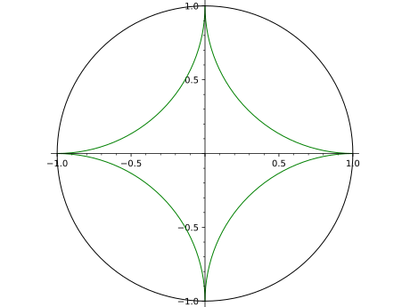

Return a hyperbolic polygon in the hyperbolic plane with vertices pts.
Type ?hyperbolic_polygon to see all options.
INPUT:
pts – a list or tuple of complex numbers
OPTIONS:
model – default: UHP Model used for hyperbolic plane
alpha – default: 1
fill – default: False
thickness – default: 1
rgbcolor – default: 'blue'
linestyle – (default: 'solid') the style of the line, which is
one of 'dashed', 'dotted', 'solid', 'dashdot', or
'--', ':', '-', '-.', respectively
EXAMPLES:
Show a hyperbolic polygon with coordinates \(-1\), \(3i\), \(2+2i\), \(1+i\):
sage: hyperbolic_polygon([-1,3*I,2+2*I,1+I])Graphics object consisting of 1 graphics primitive
With more options:
sage: hyperbolic_polygon([-1,3*I,2+2*I,1+I],fill=True,color='red')Graphics object consisting of 1 graphics primitive

With a vertex at \(\infty\):
sage: hyperbolic_polygon([-1,0,1,Infinity],color='green')Graphics object consisting of 1 graphics primitive
Poincare disc model is supported via the parameter model.
Show a hyperbolic polygon in the Poincare disc model with coordinates
\(1\), \(i\), \(-1\), \(-i\):
sage: hyperbolic_polygon([1,I,-1,-I],model="PD",color='green')Graphics object consisting of 2 graphics primitives

With more options:
sage: hyperbolic_polygon([1,I,-1,-I],model="PD",color='green',fill=True,linestyle="-")Graphics object consisting of 2 graphics primitives
Klein model is also supported via the paraeter model.
Show a hyperbolic polygon in the Klein model with coordinates
\(1\), \(e^{i\pi/3}\), \(e^{i2\pi/3}\), \(-1\), \(e^{i4\pi/3}\), \(e^{i5\pi/3}\):
Hyperboloid model is supported partially, via the paraeter model.
Show a hyperbolic polygon in the hyperboloid model with coordinates
\((3,3,\sqrt(19))\), \((3,-3,\sqrt(19))\), \((-3,-3,\sqrt(19))\),
\((-3,3,\sqrt(19))\):
Filling a hyperbolic_polygon in hyperboloid model is possible although
jaggy. We show a filled hyperbolic polygon in the hyperboloid model
with coordinates \((1,1,\sqrt(3))\), \((0,2,\sqrt(5))\), \((2,0,\sqrt(5))\).
(The doctest is done at lower resolution than the picture below to
give a faster result.)